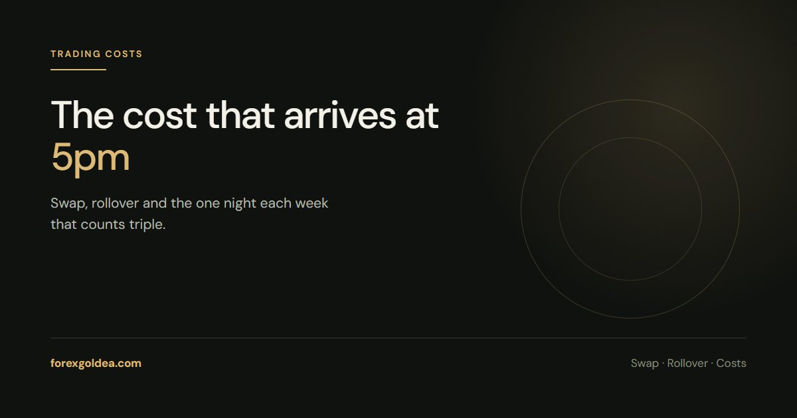

Gold Swap and Rollover: The Overnight Cost

Spread is the cost everyone budgets for. Swap is the one that arrives quietly at 5pm New York, every night a position stays open, and it is the reason a winning swing idea can finish flat.
What swap actually is
Holding gold on margin means holding a financed position. Swap — also called rollover — is the overnight financing adjustment applied when the position crosses the broker's daily cut-off, normally 5pm New York time.
It can be a debit or a credit, and the two directions are not symmetrical. On most accounts holding gold long costs money and holding short pays a little, though the sign flips when interest-rate conditions change. Neither is a fixed law of the market; it is a number your broker publishes and can change.
Where to find your actual number
Do not guess this one. In MetaTrader, right-click XAUUSD in Market Watch and open Specification. Two lines matter: Swap long and Swap short, plus the units they are quoted in — points, money or percent.
The figures are quoted per standard lot per night. A swap long of -$12 means a full lot costs $12 a night, so 0.10 lots costs $1.20 and 0.01 lots costs $0.12.
Triple swap Wednesday
Spot metal settles two business days forward. The weekend has to be financed, and the market books it mid-week rather than at the weekend itself, so one night each week carries three days of swap. On most gold accounts that is the Wednesday-to-Thursday roll.
For a day trader this is irrelevant. For anyone holding through midweek it means one night costs roughly what three normally do — worth knowing before deciding to hold a Wednesday position overnight.
When it is big enough to matter
Scale it against the trade, not against the balance. A 0.10 lot position paying $1.20 a night is noise on a trade aiming at $150. Held for three weeks, with a triple-swap night in each, it is around $30 — which is a fifth of the target quietly gone.
The rule of thumb that holds up: if the intended hold is longer than about a week, price the swap into the trade before taking it. If the intended hold is intraday, ignore it entirely.
Swap-free accounts, honestly
Islamic or swap-free accounts remove the overnight interest component, which matters for traders who cannot pay or receive interest for religious reasons. The cost rarely disappears altogether — brokers commonly recover it through a wider spread, a commission, or an administration fee after a number of days.
That is not a criticism, just arithmetic: financing a leveraged position has a cost somewhere. Read the specific terms rather than assuming "swap-free" means free. Our guide on whether gold trading is halal covers the religious side in more depth.
How it fits with the rest of your costs
Three charges sit between a chart idea and a bank balance: the spread on entry and exit, commission if your account charges one, and swap for every night held. The first two hit once. The third compounds with time.
A position sizing habit that accounts for all three is just honest arithmetic — the risk calculator gives you the per-trade figure to start from.
Reader questions
What is swap on XAUUSD?
An overnight financing adjustment applied when a gold position is held past the broker's daily cut-off, usually 5pm New York. It can be charged or paid depending on direction and prevailing rates, and your broker publishes the exact figure per lot.
Why is gold swap charged three times on Wednesday?
Spot metal settles two business days forward, so the weekend has to be financed in advance. Most brokers book three days of swap on the Wednesday-to-Thursday roll rather than at the weekend.
Does swap apply if I close before the end of the day?
No. Swap is only applied to positions open at the daily cut-off. A trade opened and closed inside the same session never pays it, which is why intraday traders can ignore it.
How do I find my broker's gold swap rate?
Right-click XAUUSD in the MetaTrader Market Watch and open Specification. The swap long and swap short values are listed there, along with the units they are quoted in.
Is a swap-free gold account actually free?
The interest component is removed, but brokers usually recover the cost through a wider spread, a commission or an administration fee on longer holds. Check the specific terms rather than assuming there is no cost.
Where this leaves you
Swap is small, predictable and entirely knowable before you take the trade - which makes it the easiest cost to stop being surprised by. Look it up once for your account, remember that one night a week counts triple, and only let it influence trades you intend to hold for more than a few days.
Affiliate disclosure: we earn a commission when you open and fund an account through our partner links, at no extra cost to you.